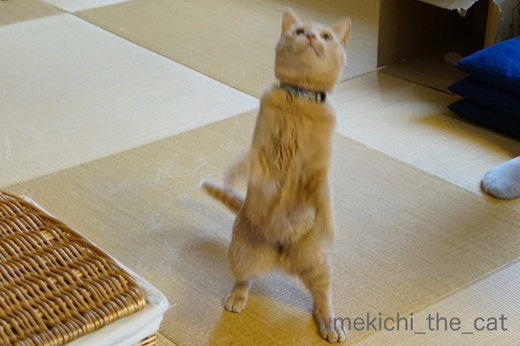
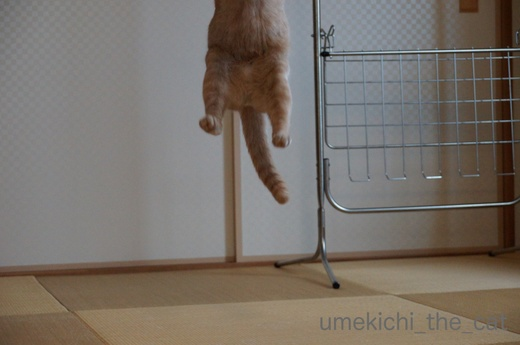
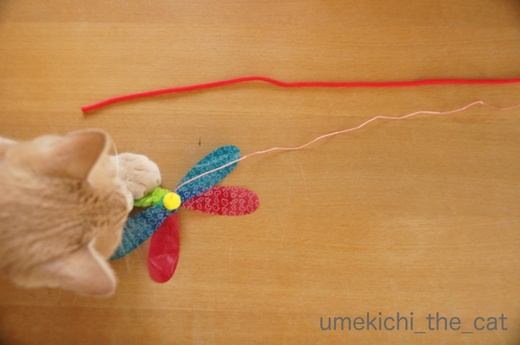
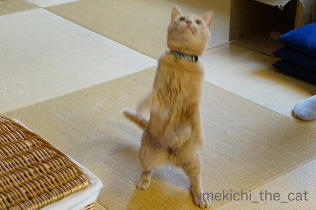
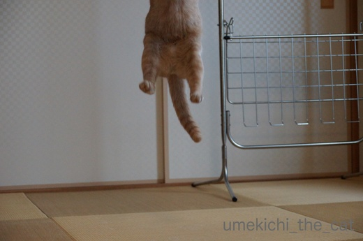
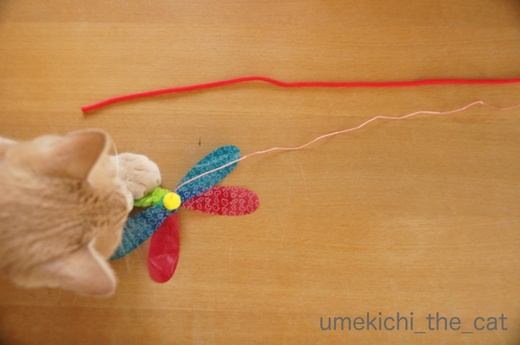

ジャンプの写真とマニアックな視点 [梅吉]
おもちゃで遊ぶ時の梅吉は走る（走り回る）かジャンプする（しまくる）ことがほとんど。
テレビ番組や雑誌に登場するにゃんこの様に可愛らしくじゃらしにちょいちょいすることは
ほとんどありません(^▽^;)
可愛らしく遊んでくれないのだったらジャンプの躍動感あふれる様子を上手くカメラに収めたい
と思うのですがそれはとても難しいことで・・・

撮れるのはこんな体の一部の写真や

今まさに飛び上がろうと踏ん張る写真(*>艸<)
これはこれで好きな写真なんですけどねー。

これは床を蹴って上昇していく途中のお腹ww

これも飛び上がる寸前の踏ん張る姿。顔までリキんでいるのがたまりません。。
さっきから体の一部の写真と踏ん張る顔の写真ばっかりですけど・・・・・って
そう！そうなんです！！
ジャンプの瞬間を撮ろうと量産するボツ写真を見ているうちに
この二つのアングル＆表情の写真が大好きになってしまったーーー！！！
時にはこんな写真もあったりして

キャーーーーー(〃▽〃)あちがイイねーーーーーーーーＯ(≧▽≦)Ｏ
マニアックな視点のボツ写真バンザイ\( ˆoˆ )/
（梅吉の横に物干し台がなければもっと良いんだけど）
でも今回はちゃんとしたジャンプの瞬間の写真も撮れましたよ。

梅吉ジャ〜〜〜〜ンプ！！
 ↑ガブッと一押し↑
↑ガブッと一押し↑
初めて買ったカシャぶん（ネズミさん）。遊び方が激しすぎるのか
本体と棒をつなぐほそ〜い糸がよじれてよじれて丸まって元に戻らなくなってしまいました。
糸が太ければよじれないだろうとヒモにつけかえると遊ばない(꒦ິ⌑꒦ີ)

赤いヒモが付け替えたもの。
下に見えているのがオリジナルの「糸」のカシャぶん。これはハチさんバージョン。そう二代目です。
比較の写真を撮っているそばから梅吉さんが食いついて来ましたよ＾＾
そして一緒に買ったのが「カシャぶんじゃらし」（三代目襲名）。

これもとってもよく遊びました・・・・・過去形（涙）
届いたのは一週間くらい前。お猫様、早くも飽きて来た模様wwwww
おもちゃジプシーは続きます。。
テレビ番組や雑誌に登場するにゃんこの様に可愛らしくじゃらしにちょいちょいすることは
ほとんどありません(^▽^;)
可愛らしく遊んでくれないのだったらジャンプの躍動感あふれる様子を上手くカメラに収めたい
と思うのですがそれはとても難しいことで・・・

撮れるのはこんな体の一部の写真や

今まさに飛び上がろうと踏ん張る写真(*>艸<)
これはこれで好きな写真なんですけどねー。

これは床を蹴って上昇していく途中のお腹ww

これも飛び上がる寸前の踏ん張る姿。顔までリキんでいるのがたまりません。。
さっきから体の一部の写真と踏ん張る顔の写真ばっかりですけど・・・・・って
そう！そうなんです！！
ジャンプの瞬間を撮ろうと量産するボツ写真を見ているうちに
この二つのアングル＆表情の写真が大好きになってしまったーーー！！！
時にはこんな写真もあったりして

キャーーーーー(〃▽〃)あちがイイねーーーーーーーーＯ(≧▽≦)Ｏ
マニアックな視点のボツ写真バンザイ\( ˆoˆ )/
（梅吉の横に物干し台がなければもっと良いんだけど）
でも今回はちゃんとしたジャンプの瞬間の写真も撮れましたよ。

梅吉ジャ〜〜〜〜ンプ！！
初めて買ったカシャぶん（ネズミさん）。遊び方が激しすぎるのか
本体と棒をつなぐほそ〜い糸がよじれてよじれて丸まって元に戻らなくなってしまいました。
糸が太ければよじれないだろうとヒモにつけかえると遊ばない(꒦ິ⌑꒦ີ)

赤いヒモが付け替えたもの。
下に見えているのがオリジナルの「糸」のカシャぶん。これはハチさんバージョン。そう二代目です。
比較の写真を撮っているそばから梅吉さんが食いついて来ましたよ＾＾
そして一緒に買ったのが「カシャぶんじゃらし」（三代目襲名）。

これもとってもよく遊びました・・・・・過去形（涙）
届いたのは一週間くらい前。お猫様、早くも飽きて来た模様wwwww
おもちゃジプシーは続きます。。

カフェオレ色の梅吉

梅吉 2023年8月10日 永眠


梅吉と出会った譲渡会

犬猫の理由なき殺処分ゼロ
妄想広告
UMEKICHI 光

爆発的に早い！
時々攻撃的！
Thanks to Mr.Boss365
爆発的に早い！
時々攻撃的！
Thanks to Mr.Boss365

すごい！見事な写真です！
こういうの撮りたいけどスマホでは無理ぃぃ(笑)
梅吉君の真剣なお顔もとっても可愛いわ^^
おもちゃジプシーになりますよね。すぐ飽きるんだもんーー；；
by リュカ (2017-09-13 16:50)
見事なジャンプですね〜〜^ ^
皆さんお元気そうで何よりです！＾＾
by KENT0mg (2017-09-13 17:55)
可愛い♪可愛い♪
梅吉ジャ～～～ンプ！！梅吉くんと一緒に遊んでるみたいです。
その前のあんよのお写真もケラケラ笑っちゃった(^-^)
ボツ写真も削除できなくなっちゃうよね。溜まる～っ！！
おやつはちゅ～る。おもちゃはかしゃブンｗ
家もこの間買ってきたかしゃブンが、今朝無残な姿で廊下に転がっていました・・・
また買って来なきゃ・・・( ；∀；)
by emi (2017-09-13 18:01)
おぉ、最後のジャンプ写真は本当に見事ですねぇ*\(^o^)/*
梅吉さんの躍動感あふれる動きと真剣な眼差しと力の入った手足( ^ω^ )
こういう写真が撮れればどんなにボツ写真が山でも頑張ろうと思えますよねぇ♪( ´▽｀)
おもちゃジプシー・・・本当にお猫様のおもちゃのツボは難しいです´д` ;
by ニッキー (2017-09-13 18:33)
ジャンプ写真、お見事ですね。
いつか撮って見たいんですが、なかなか。
それにしても、梅吉さんのジャンプ力は凄いです(^^♪
by riverwalk (2017-09-13 19:40)
躍動感がある写真って難しいですよね(;^_^A
でも梅吉さんが楽しく遊んでいる様子が
ものすごく伝わってきます♪
下半身だけの写真でも
愛おしく感じちゃいますよね(*^_^*)
by きぃ (2017-09-13 19:50)
ナイスジャーンプ！ナイスショット！
いい感じのヘッピリ腰に、大きく開いたおてて。空中で止まってるみたい！
おもちゃは悩みますよね。いっそニャンコを売り場に連れて行って選ばせたいくらい。でも店にいっぱい並んでたら、それだけでハイテンションになっちゃって、なんでこんなの買ったの？みたいのを選びそう…
by BillK-ko (2017-09-13 20:38)
あ～、もう、ジャンプの時の脚最高っ(*^▽^*)
胴体だけ、足の先だけ、体の一部写真がまた猫変態にとってはたまりません♪
オモチャは本当にスグ飽きますよね。
昨日まで目の色変えて飛び掛かっていたくせに、今日は鼻先かすめても知らん顔。しばらく封印して忘れたころに新品のフリをして出してみたりしております(^▽^;)
by ゆきち (2017-09-13 20:48)
梅吉さんのジャンプ、とても躍動感がありますね。
体全体が写らないジャンプ写真も面白いですね。^^)
by yes_hama (2017-09-13 21:36)
踏ん張ってる時はお口も「むん!」と閉じてるんですね。
下半身だけのは"猫が浮遊する"超常現象写真みたい。ジャンプのは開いたお手手をパフッと合わせてるのが可愛いです。
by zombiekong (2017-09-13 21:55)
ジャンプの瞬間が撮れましたね〜
けれども、飛び上がって足だけが写っているのも良いですね〜
随分、飛んでいるのが、分かります。
by kiki (2017-09-13 22:11)
飛ぶ方も、撮る方もお見事です！
ますます梅吉君を応援したくなる、うめむすであります。
by うめむす (2017-09-13 22:41)
飛んでる写真、すごい！見事な写真ですね。
足だけの写真は、単独でこれだけ見たら、ギョッとします、、、☆
by nachic (2017-09-14 02:22)
昔は一緒に遊んでたので
ジャンプさせて楽しんでましたねぇ。
遊ぶのは簡単ですが
撮るのは難しいでしょうね＾＾；
by ぽちの輔 (2017-09-14 06:57)
ナイスジャンプショット!!
by kou (2017-09-14 08:00)
梅吉さんのジャンプショットはナイスですねー＾
足だけのやつはホント浮遊してるみたい（笑）
すぐ壊れるカシャブン、もちょっと丈夫にならんかな？
by じゅらまろ (2017-09-14 10:52)
かーっこいーい！(≧∇≦)ｷｬｰ♪
by Ginger (2017-09-14 13:16)
梅吉くん、みごとなジャーンプ！
体の一部だけ、しかもぼやけてるって～わかります＾＾；
でも、すっごい感じ出てますよ～♪
いい瞬間も撮れましたね☆
カシャぶん、紐が細いところがツボ？
お猫様、飽きるんですよね‥小さいうちは何にでもじゃれる頃があるんだけど、だんだん、興味なさそーになって。
そうすると、私は色々オモチャや動きを工夫したけど～うちの親がつまんなくなって遊んであげなくなったものでした＾＾；
by sana (2017-09-14 18:28)
飛んで足しか写ってない写真好きだわぁ。
全身が写ってるより躍動感を感じます。
by 響 (2017-09-14 19:40)
ご訪問＆ nice! ありがとうございます。
梅吉くん、体をくの字に曲げてのジャンプ、お見事です。
獲物を捕まえられなくて、少し情けない表情になってるのも面白いですね。
by 猫爺 (2017-09-14 20:47)
リュカさん＞動画はスマホの方が撮り易いんですよー。
デジイチの動画は（勝手に）クオリティを追求するので
めっちゃ焦点が切り替わって見ていると具合が悪くなりそうな
映像が撮れます(^▽^;)
一長一短かな・・・・・（使いこなせていないだけという話もありw)
おもちゃ、次は手作りー！（ショボいやつww)
KENT0mgさん＞あ！孤軍奮闘（？）のKENTさん！！
梅吉を含め我が一家、夏バテもせず秋を迎えましたよ＾＾
emiさん＞我が家の写真は臨場感重視！
連写で撮ることが多いので写真の枚数が凄いです(＠◇＠)
つくづくデジタルの時代で良かったなぁと思っていますよ。。
emiさんのお家では一夜にしてカシャぶんが無残な姿に？(*>艸<)
我が家は羽が一枚取れ、フィルムが一枚剥がれ・・・と
日々弱っていきますww
ニッキーさん＞ボツ写真の山の中からたまに撮れるお宝写真。
パソコンに画像を落として確認しながらほくそ笑む瞬間がたまりませんー＾＾
ボツ写真がいちどに5〜６00枚出ようとも次もきっと！という
モチベーションに繋がっています。
おもちゃは・・・梅吉の次のツボはどこー！！
riverwalkさん＞おてんばユキちゃんの躍動感あふれるお写真
期待しておりますよーヾ(*ΦωΦ)ﾉ
梅吉のジャンプ力は日々のトレーニング（？笑）の賜物かもしれません！
下僕も頑張っていますから(*>艸<)
きぃさん＞梅吉は動きが激しいので写真に何も写っていないことも
多々あります^^;
下半身だけでも儲けもの〜♪です＾＾
BillK-koさん＞梅吉をニャンコのおもちゃ売り場に連れて行ったら・・・
陳列棚のポップとか商品を吊るしてあるヒモに食いついていきそう(^▽^;)
買わないで楽しんで（荒らして）帰って行く困ったお客になるわww
ゆきちさん＞普段全体像を生で十分堪能しているはずなのに
フレームで切り取られたにゃんこ（の一部分）って猫変態の心を
妙にくすぐるんですよねー。
梅吉が目の前にいるのに写真を見てニヤニヤしている事がよくあります (^▽^;)
カシャぶんしばらく封印してみようかな・・・・・
yes_hamaさん＞マニアックな視点を分かっていただいてありがとうございます＾＾
体の一部分だけでも躍動感って出るものなんだ・・・と発見です！
zombiekongさん＞そうそう！！「むんっ」とお口を閉じて力を溜めて・・・
でも、鼻からは「ふん〜〜〜っ」と気合が漏れちゃう梅吉です(*>艸<)
遊んでいる時の鼻息すごいんですよ。聞いて欲しいぐらいww
kikiさん＞ジャンプ力はスゴイですよ！
私の身長（154㎝）は飛び上がっちゃいます(◎_◎)
遊ぶつもりじゃなくじゃらしを持った手を何気なく頭のあたりに添えていたら
飛びついていきてびっくりしたことがあります (^▽^;)
うめむすさん＞片手にじゃらし、片手にカメラで
腕をプルプルさせながら写真を撮ることが多いのですが
この時はおっとがじゃらしを振り回していたので
上手く瞬間を捉えることができました(๑˃̵ᴗ˂̵)و
それでも決定的瞬間は難しい〜。
nachicさん＞耳がギリギリ切れずに入ってセ〜フ！の写真が撮れました＾＾
確かに！
過程を説明せずに「足だけ」は一体何事！！と思っちゃいますね(*>艸<)
ぽちの輔さん＞こんな風にジャンプするのも若いうちだけでしょうか。。
最近は遊びに贅沢になってしまってじゃらしの振り方も工夫しないと
食いつきが悪くなってきました(^▽^;)
遊ばせる事に集中して写真を撮る気力が残っていないこともwww
kouさん＞決定的瞬間、やりましたよー(๑˃̵ᴗ˂̵)و
返す返すも物干し台片付ければ良かった・・・・・
じゅらまろさん＞にゃんこの空中浮遊術＾＾
「徳」を積めば出来る様になりますって？(*>艸<)
にゃんこの「徳」ってなんだろう・・・
カシャぶんは売り上げのためにも丈夫になることはないでしょうねww
Gimgerさん＞いつまでこんな風にアクティブに遊んでくれるかな・・・
これは輝かしい青春の（プッ(*>艸<)一ページとなるでしょうか(≧▽≦)
sanaさん＞ちょっとぼや〜が躍動感を強調してくれました(^_－)☆
カシャぶん、梅吉はあの頼りない細い糸の動きにそそられるみたいですよー。
気に入っているおもちゃでも
遊び方を工夫しないとつまらなさそうな顔されますよね。
「おかーさんもつまらん人になったなぁ」とでも言いたげに
遊ばずじ〜〜〜っと顔を見られて辛い時があります( ；∀；)
響さん＞足の写真良いでしょーＯ(≧▽≦)Ｏ
ジャンプの瞬間の写真には「おお！」でしたが
足の写真には「きゃ〜！」でニヤニヤが止まりませんでしたww
床を蹴った時の踏ん張り感が空中でも残っているのが
躍動感の決め手でしょうか(๑˃̵ᴗ˂̵)و
猫爺さん＞コメントいただいてありがとうございます♪
ちょっと腰の引けているところが味のあるジャンプ写真になりました＾＾
梅吉、平時から割と困り顔なんですよー。
やんちゃで活発な割にはおもちゃを捉えきれない「ドンくささ」も
併せ持っていたりもします(*>艸<)
お気楽な猫ブログですがまた遊びにきてくださいませm(_ _)m
by ちぃ (2017-09-14 23:01)
お写真、体の一部分のだって、躍動感あるし
すごく迫力ありますよ＾＾ｂ
上昇していくお腹のは、マッチョな雰囲気出てるし、
カシャぶんに飛びつくのは、顔もとても可愛いです＾＾
by マーヤ (2017-09-15 01:16)
すごいなぁ～
私も何度も挑戦してるけど
ジャンプしてるの撮れないんですよねー！！
梅吉さんかっこいいですー。
by sumi-cyan (2017-09-15 03:19)
最後のジャンプの梅吉くんめっちゃ躍動的なのに顔が静的～～！何ゆえ～？
お腹可愛いね(*^^*)
by palpal (2017-09-15 15:15)
マーヤさん＞一部で全体を知る・・・・・
梅吉は身を以て教えてくれたのでしょうか(*>艸<)
いつも走り回っているせいか結構ガチむちな梅吉です＾＾
sumi-cyanさん＞このジャンプの瞬間を捉えるまでに
累計で3〜4000枚は撮ったのではないかと・・・^^;
がんばりましたー＾＾
palpalさん＞言われてみれば本当だー！顔だけ動いてない静かな感じ！！
ターンするダンサーは顔だけ正面に残してクルクル回りますよね。
梅吉あれが出来るんです！その成果かな〜？
お腹だけで十分可愛いって猫は役得ですよねー(≧▽≦)
by ちぃ (2017-09-15 15:47)